Cape Cod Travel Guide
Geographic cape extending into the Atlantic Ocean from the southeastern corner of mainland Massachusetts.
Places to See in Cape Cod
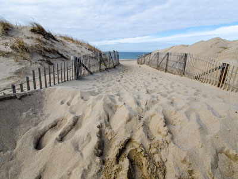
m01229 from USA, CC BY 2.0, via Wikimedia Commons; Image Size Adjusted
.jpg){kind=link}
Cape Cod National Seashore
Encompasses 43,607 acres on Cape Cod, and includes ponds, woods, beachfront and nearly 40 miles (64 km) of seashore along the Atlantic-facing eastern shore of Cape Cod
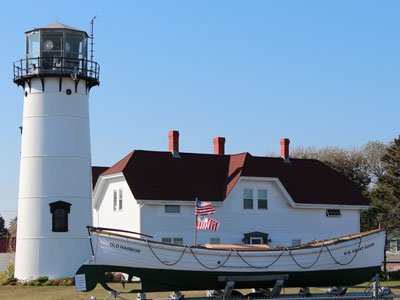
Bob Linsdell, CC BY 3.0, via Wikimedia Commons; Image Size Adjusted
.jpg){kind=link}
Chatham Light
Lighthouse in Chatham, Massachusetts, near the "elbow" of Cape Cod
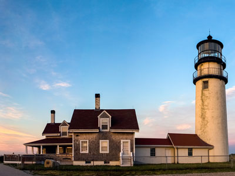
Rick Harris, CC BY-SA 2.0, via Wikimedia Commons; Image Size Adjusted

Highland Light
Active lighthouse on the Cape Cod National Seashore in North Truro, Massachusetts is the oldest and tallest lighthouse on Cape Cod
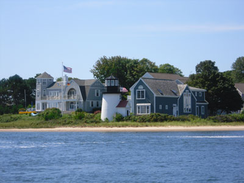
Elmschrat Coaching38, CC BY-SA 3.0, via Wikimedia Commons; Image Size Adjusted

Hyannis
Largest of the seven villages in the town of Barnstable, Massachusetts is the commercial and transportation hub of Cape Cod
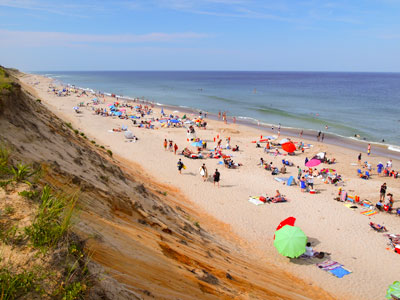
|vv@ldzen|, CC BY 2.0, via Wikimedia Commons; Image Size Adjusted

Marconi Beach
Part of the Cape Cod National Seashore popular among locals and tourists for surfing and boogie boarding
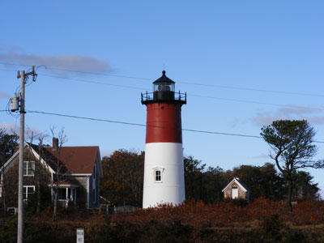
Ted Kerwin, CC BY 2.0, via Wikimedia Commons; Image Size Adjusted
.jpg){kind=link}
Nauset Light
Restored lighthouse on the Cape Cod National Seashore near Eastham, Massachusetts
Nobska Light
Lighthouse located in Woods Hole, Massachusetts on the southwestern tip of Cape Cod

John Phelan, CC BY 3.0, via Wikimedia Commons; Image Size Adjusted

Provincetown
New England town located at the extreme tip of Cape Cod known for its beaches, harbor, artists, tourist industry, and its status as a vacation destination for the LGBT+ community

Mark from Baltimore, USA, CC BY 2.0, via Wikimedia Commons; Image Size Adjusted

Sandwich, MA
Oldest town on Cape Cod
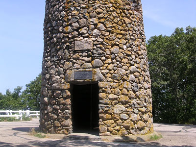
Costoa, CC BY 3.0, via Wikimedia Commons; Image Size Adjusted

Scargo Tower
30-foot-tall (9.1 m) cobblestone tower located atop Scargo Hill in Dennis, Massachusetts on Cape Cod
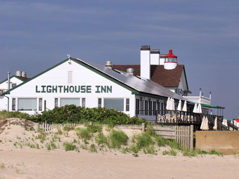
Larry D. Moore, CC BY-SA 4.0, via Wikimedia Commons; Image Size Adjusted

West Dennis Light
Lighthouse in West Dennis, Massachusetts, owned by and sits on top of the Lighthouse Inn, a seasonal hotel
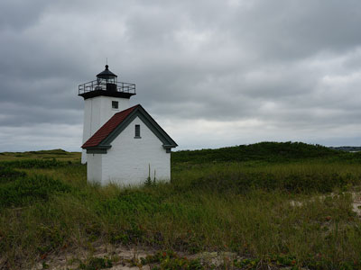
Kristina D.C. Hoeppner from Wellington, New Zealand, CC BY-SA 2.0, via Wikimedia Commons; Image Size Adjusted
_(20593576976).jpg){kind=link}
Wood End Light
Historic lighthouse, located at the southwest end of Long Point in Provincetown, Massachusetts
Overview
Cape Cod is a hook-shaped peninsula extending into the Atlantic from southeastern Massachusetts, with maritime villages, dunes, lighthouses, and long beaches that draw crowds each summer. The Cape covers all of Barnstable County, 15 towns from Bourne to Provincetown. The Pilgrims first landed at Provincetown in 1620 before settling in Plymouth.
Regions at a Glance
| Region | What to Expect |
|---|---|
| Upper Cape | Sandwich, the oldest town on the Cape, plus Falmouth and Woods Hole (research institutes and ferries to Martha's Vineyard) |
| Mid-Cape | Hyannis, warm-water beaches on Nantucket Sound, ferries to Nantucket, and the Kennedy Compound |
| Lower and Outer Cape | Chatham, Orleans, Eastham, Wellfleet, Truro, and Provincetown, with the Atlantic beaches of Cape Cod National Seashore |
Lighthouses
- Highland Light, the oldest and tallest on the Cape
- Nauset Light, Chatham Light, and Nobska Light
- Provincetown's Race Point, Long Point, and Wood End lights
Good to Know
- Kennedy family: the Kennedy Compound in Hyannis Port was JFK's summer White House
- Getting here: the Sagamore and Bourne bridges cross the Cape Cod Canal, and traffic is heavy on summer weekends
This article uses material from the Wikipedia article "Cape Cod", which is released under the Creative Commons Attribution-Share-Alike License 3.0.
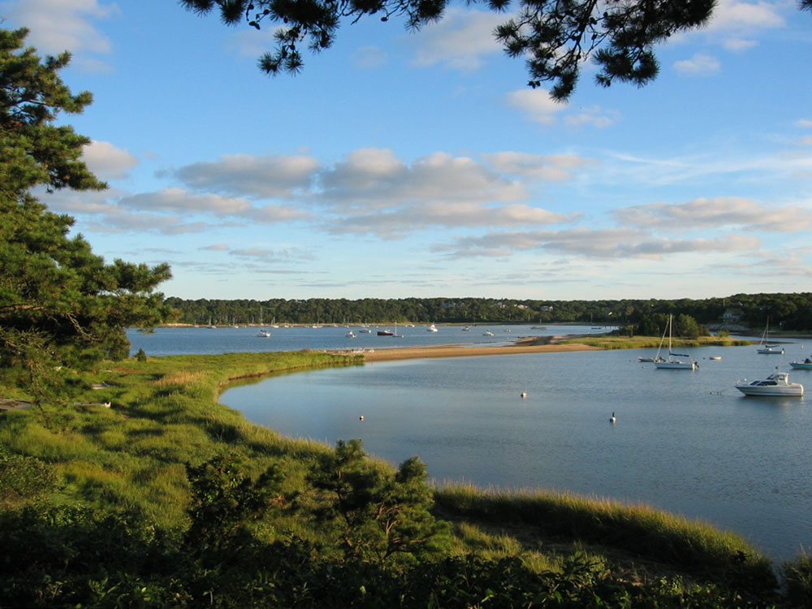

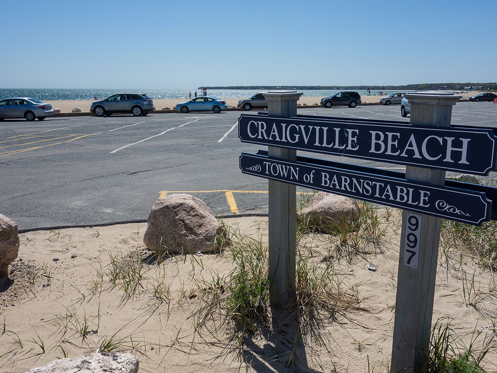

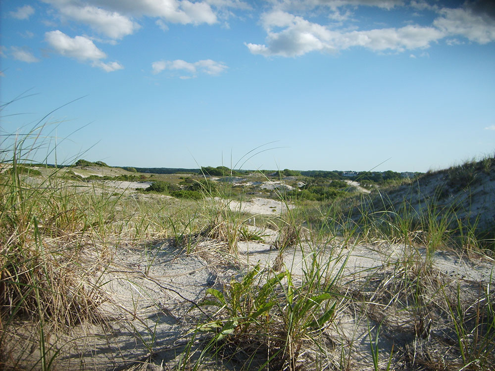

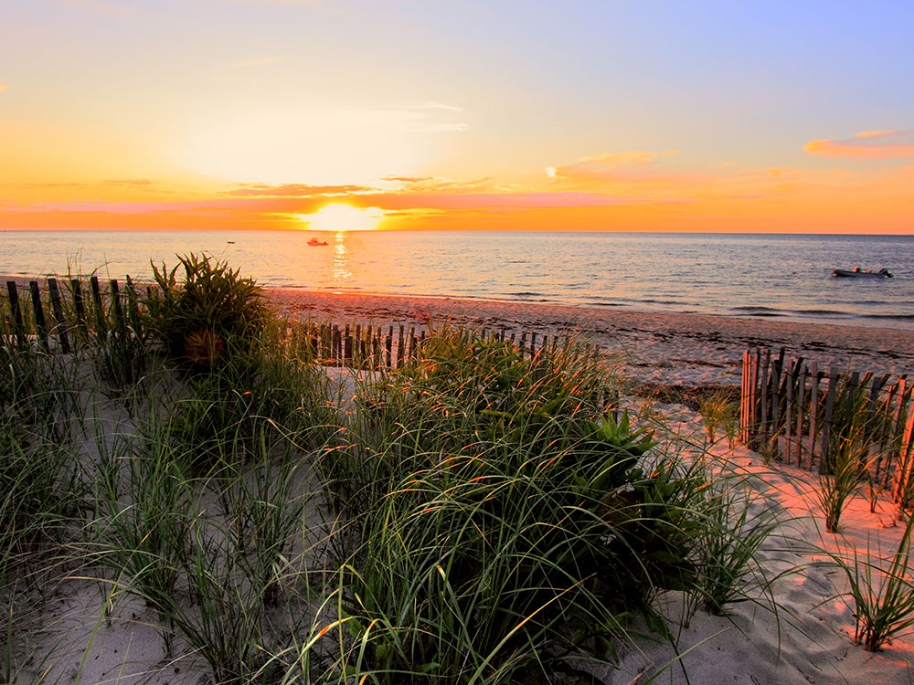

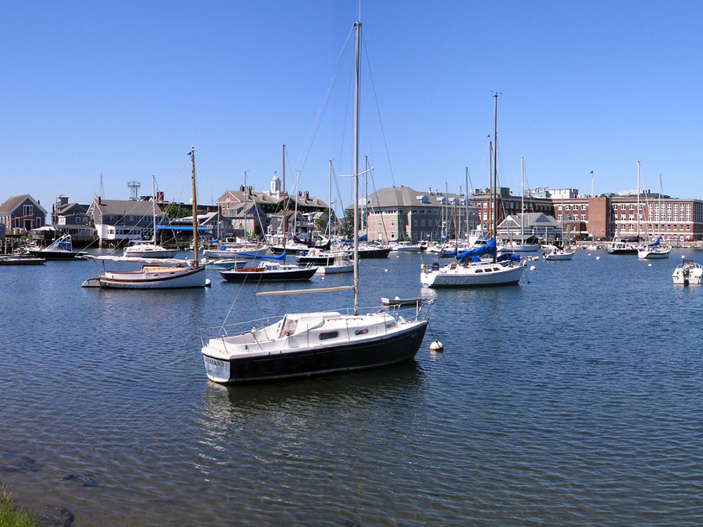